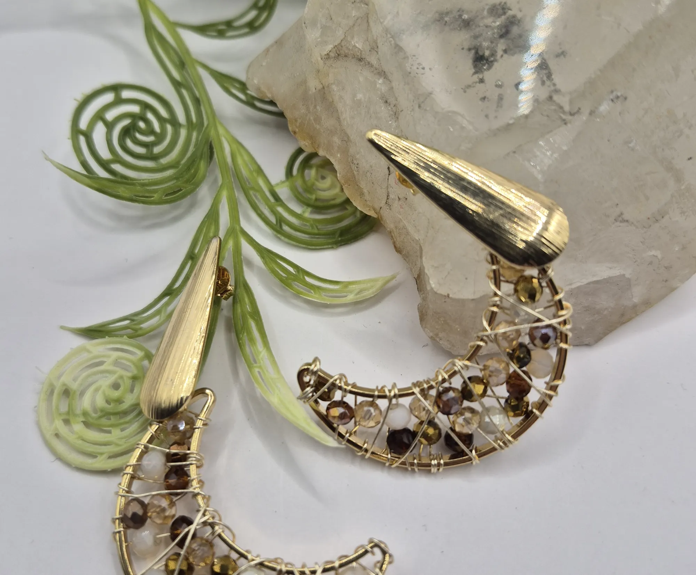

Joyas hechas
a mano
Plata con piedras naturales, mostacilla Miyuki y alambrismo. Cada pieza la diseña y la teje María Angélica, de principio a fin.

Destacadas


Una pieza creada para ti
María Angélica es terapeuta holística. Te ayuda a elegir las piedras según la energía o la protección que buscas, y crea la pieza a tu medida.
Conversamos
Me cuentas qué buscas: una intención, una piedra o un color.
Diseñamos
Elegimos metal, piedras, corte y dijes. Confirmas con un anticipo del 40%.
Creo tu pieza
Tejo y armo cada detalle a mano en el taller.
De 4 horas a 1 semanaLa recibes
Te envío fotos del resultado y la despacho por Starken o la entrego en feria.
Las piedras
Las piedras con que más trabajo y lo que aportan a tu vida.
Amatista
CalmaEntrega paz y calma, y aleja el estrés. Favorece el equilibrio.
Lapislázuli
SabiduríaEstimula la sabiduría, la comunicación y la conexión espiritual.
Ojo de tigre
ProtecciónBrinda protección, fortalece la voluntad y atrae estabilidad.
Cuarzo rosa
Amor propioAporta amor propio, ternura y armonía. Mejora las relaciones.
Obsidiana
LimpiezaLimpia energías, te protege y ayuda a soltar lo negativo.
Dónde encontrarnos
Baquedano
Metro de Santiago, Líneas 1 y 5 · Lunes a viernes
Si buscas una pieza en particular, escríbeme antes y te la llevo.
- Próx. semanaEstación Quinta NormalMetro de Santiago, Línea 5
- DiciembreBarrio ItaliaFeria de emprendedoras, fines de semana
- DiciembreFeria de GuapasSemana completa
Fechas de ejemplo. La clienta las actualizará desde su panel de administración.
Historias de clientas
“Excelente atención y productos de gran calidad.”
“Estoy feliz con mis aritos.”
“¡Me encanta!”
¿Buscas algo especial?
Cuéntame qué pieza imaginas. Respondo personalmente cada mensaje por WhatsApp.